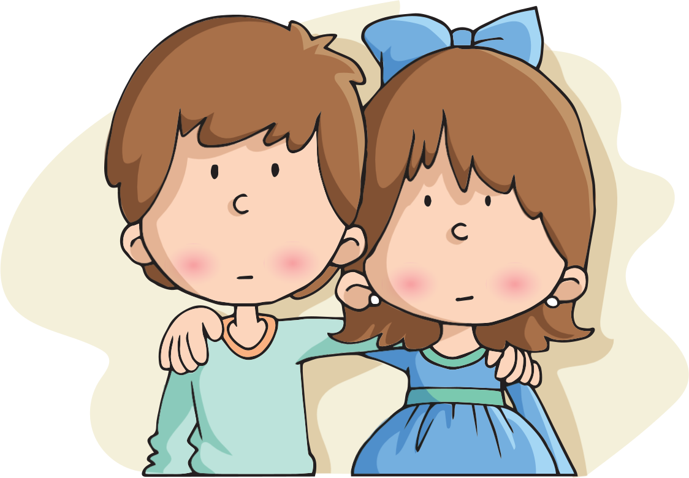

Jugamos con las palabras
Signos de interrogación y admiración
Selecciona en el siguiente texto los signos de interrogación, los de
admiración y los guiones.
Sandy y Juan son hermanitos. A Juan le gustaba mucho el dibujo de un
dragón y lo colgó en la pared de su sala, pero a Sandy no le pareció
buena idea y lo trasladó a otro lugar. Después de dos o tres veces que
sucedió lo mismo, se pusieron de mal humor y comenzaron a discutir, en
ese momento llegó su mamá y preguntó:
-
¿Por qué discuten
?
Inmediatamente Juan señaló el dibujo y le dijo:
-
¡Yo lo coloco y ella
lo quita!
Y su mamá le respondió:
-Así es:
¡tú estás loco, loco
!, y ella,
¡totalmente
loquita!

Lee los siguientes textos y escribe los signos correspondientes.
Son los signos que se utilizan para enunciados interrogativos.
Estos signos se utilizan para expresar sorpresa, alegría, deseo, mandato, etcétera.